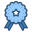

Please rotate your device to landscape mode to enjoy a top-notch experience and resize if needed.
Please rotate your device to landscape mode to enjoy a top-notch experience and resize if needed.
Please rotate your device to landscape mode to enjoy a top-notch experience and resize if needed.
Please rotate your device to landscape mode to enjoy a top-notch experience and resize if needed.
Please switch to a screen
wider than 300px to
enjoy a top-notch experience while
browsing this site ;)
Information Systems Engineer with background experience in Product Design with a UX focus. I'm currently growing and continuing my training in visual design and UI tools.
[Awards & Recognitions]

Honour Mention as a Recognized Women in Innovation by the Spanish Ministry1st Step into the Future 2020
1st Young Researcher of Spain 2019
[Experience]
UX Researcher
Technical University of Berlin
09/2023 - 10/2024
• Qualitative research: Interviews with users.
• Subsequent qualitative analysis of the interviews using UX Research techniques: user personas, user journey, user stories.
• Qualitative analysis with Atlas.ti software and coding.
• Writing and reviewing scientific papers.
UX/UI Designer
Google for Education, FABLAB Laboratories
11/2022 - 01/2023
FABLAB are Industry 4.0 labs based at ENIAC University in Brazil. There, I learned to apply advanced techniques in Artificial Intelligence and Machine Learning in various fields such as 3D modeling, programming languages, robot task automation, Lean Manufacturing, etc.
Product Design (UX/UI)
United Nations, PPS Program
07/2022 - 11/2022
Creation of a Database to integrate community micro-hydroelectric projects into a digital environment and accelerate data
management processes, going through the corresponding UX design phases:
• Interview with users of the PPS program.
• Design of the ER model and logical structure to store data in the database.
• Implementation of the Back-End for the database.
• Design of the Front-End and user interfaces.
Product Design (UX/UI)
FORD MOTOR S.L.
02/2022 - 07/2022
Design of a Dashboard with real-time production line data:
• UX Research: Interviews with Production Engineers and line workers. Post-analysis and study of Analysis of a mixed production line its 500+ components and databases. Interview with Production Engineer and line workers.
• Back-End: Application of Artificial Intelligence in Prediction Models for Machine Learning to reduce rework rates.
• Front-End: Programming of ETL, user interfaces that include Data Analysis and results from the AI model to streamline
DECISION MAKING.
[Education]
Front-End Dev, Web & Graphic Design
CEI
2024-2025
UX Design
Google
2024-2025
Industrial Engineering
Universitat Politécnica Valencia
2018-2023
[Skills]
Design tools


Languages
.png)
Coding